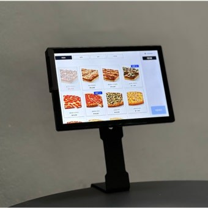

양산 식당·카페·주점·고깃집에 손님이 태블릿으로 직접 주문·결제하는 테이블오더를 설치비 무료, 월 14,000원~로 평균 4일 이내 방문 설치해 드립니다.
양산 전역의 식당·카페·주점에 테이블오더(테이블 태블릿 주문·결제)를 설치해 드립니다. 손님이 테이블에서 직접 메뉴를 보고 주문·결제하면, 주문이 곧바로 주방과 포스(POS)로 전송되어 직원이 일일이 주문을 받지 않아도 매장이 돌아갑니다. 양산 신규 창업 매장도, 기존 매장 추가 설치도 한 번에 처리합니다.
① 테이블마다 태블릿을 설치해 비대면 주문
② 주문이 주방·포스로 자동 전송되어 주문 오류·누락 감소
③ 직원 호출·추가 주문이 쉬워 객단가·회전율 상승
④ 사진 메뉴판과 다국어 지원으로 외국인 손님도 편리
⑤ 카드·삼성페이·카카오페이·QR 테이블메뉴결제 즉시 처리
⑥ 인건비 절감과 피크타임 응대 부담 완화
양산 어느 동이든 동 단위로 방문해 테이블오더를 설치합니다.
고깃집·국밥집 등 회전 빠른 식당, 좌석이 많은 카페, 주점·호프, 분식·푸드코트 등 인건비 부담이 큰 양산 매장에 특히 효과적입니다. 설치비 무료·월 14,000원~·24시간 A/S로 진행합니다.